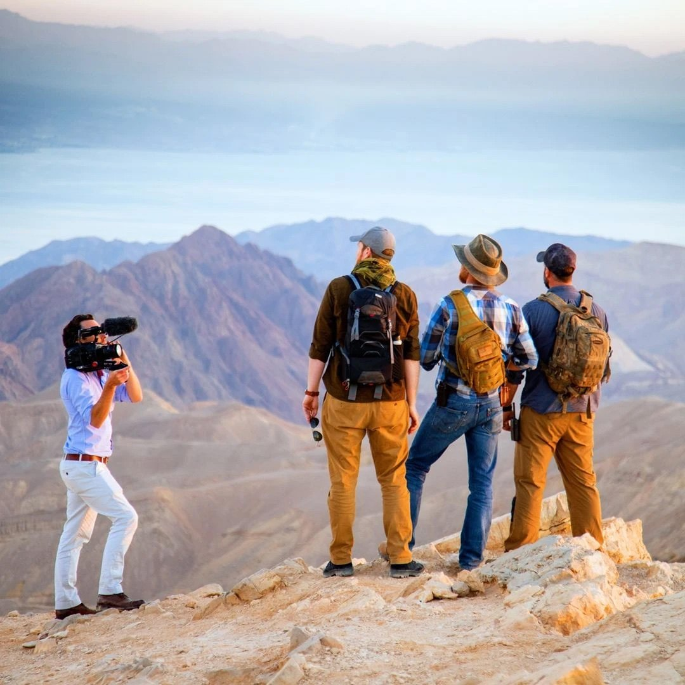

About John
Theology and design, from Israel.
John Enarson is an Evangelical educator, author, and creative director whose work combines theology with design.
His story
Born in Sweden, at home in Jerusalem.
Born in Sweden, John has lived in Israel for 30 years, where he resides with his wife and five children. He is a member of The Society for Post-Supersessionist Theology and serves as the Christian Relations Director at Cry For Zion.
As a public speaker and theology student, he works to make complex biblical topics and history accessible to a wider audience. For over a decade he has worked with Christians on Temple Mount issues, including helping produce the first major film on the subject, I Am Israel: The Mountain of the King (David Kiern, 2025). Five of those years were spent researching and writing Jesus and the Temple Mount.
He also teaches at the Zion Study Center and helped author The Truth in Love Declaration against Christian antisemitism.
Where you’ll find John
The Watchman International
A US-registered 501(c)(3) ministry, established 1992, which sends John as its minister on location in Israel and provides leadership, accountability, and spiritual covering.
Support →Cry For Zion
John serves as Christian Relations Director, working with Christians on Temple Mount issues.
cryforzion.com →Zion Study Center
John is one of the teachers at this initiative for in-depth study of the Bible’s Jewish context.
Teaching →Ariel Media
The publishing imprint behind Jesus and the Temple Mount, where John serves as Managing Director.
arielmedia.shop →Post-Supersessionist Theology
John is a member of The Society for Post-Supersessionist Theology.
spostst.org →The Truth in Love Declaration
John helped author this declaration against Christian antisemitism.
Read it →
Film project
The first major film about the Temple Mount.
It was a privilege to work with Director David Kiern and Cry For Zion to bring to life I Am Israel: The Mountain of the King (2025).
Design
Creative direction
John also works as a creative director, forming the visual identity of projects across various media. A few previous projects: